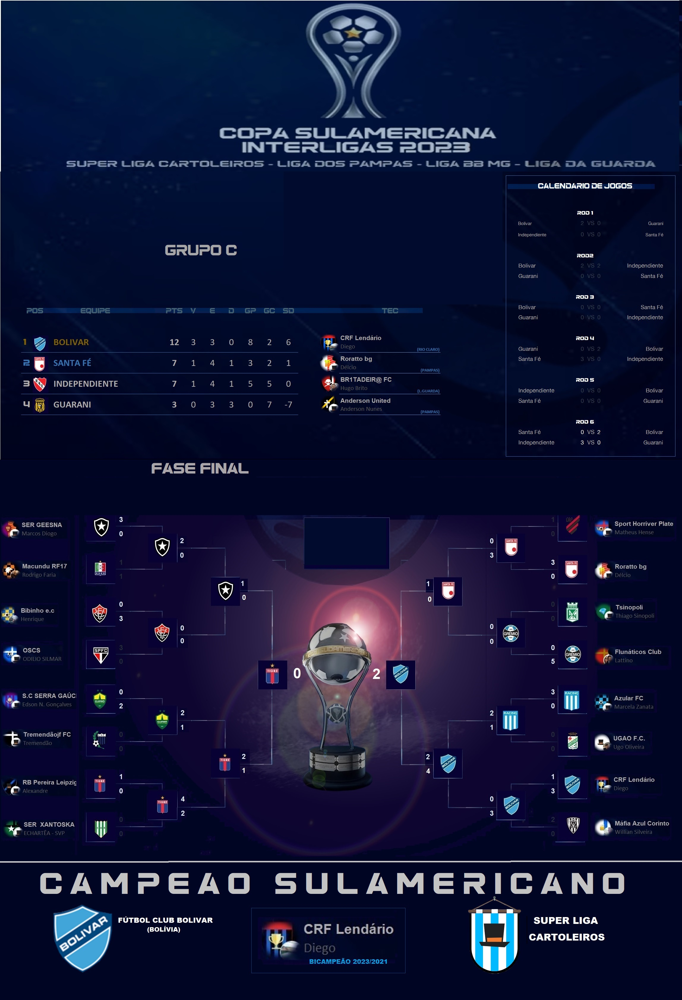

Campeonato de Cartola
A vitória no cartola é o sucesso do seu time!


Redação Cartola - 01/08/2024 - 13h37min
No mesmo formato da Copa Libetadores, segunda maior copa da temporada tem início para a rodada 21. A fórmula segue idêntica a aplicada pela COMMEBOL: oito grupos com 4 times, jogando em turno e returno. Os campeões obtêm vaga direta para a disputa do mata-mata das oitavas, enquanto os oito segundos colocados farão um "Playoff" contra os terceiros colocados da fase de grupos da Libertadores, em busca de uma vaga no mata-mata.
Ano passado, o campeão foi o Bolívar, do "CRF Lendário" da liga de Rio Claro/Rj, na final contra o Tigres do "RB Peireira Leipzig", conquistando também a Recopa Sulamericana 2024 contra o Deportivo Tachira, do "CearaJaguar19". Entretanto, como o título da Sulamericana garante classificação à Copa Libertadores Interligas do ano seguinte, desta vez, não teremos a participação do campeoníssimo clube boliviano, que segue captaneado pelo "CRF Lendário", mas desta vez, jogando divisionado no grupo "H" da Libertadores 2024. Outro fato importante é que, diferentemente dos anos anteriores, o campeão da Copa Sulamericana não mais se classifica para o mundial de clubes do presente ano, logrando apenas uma vaga direta na Libertadores do ano que vem.
Outra inovação desta temporada será o acompanhamento da competição via site, em banco de dados próprio, e não mais através de "prints" a partir de tabelas do excel, no qual apenas o administração da liga tinha a capacidade de pesquisa. O acesso se dá através do nosso menu (o "sanduíche" localizado no topo esquerdo do site), através da guia "Copa Sulamericana", ou então clicando aqui. Depois é só navegar na caixa seletora dos grupos e tomar conhecimento das 32 agremiações participantes. E para saber o nome do técnico do clube, basta ir na tabela de classificação onde o time se encontra e clicar sobre o escudo correspondente que aparece na coluna "tec." (técnico). Para fechar, clicar novamente no escudo do técnico.
Esta é apenas a primeira resenha de muitas que faremos ao longo de todas as fases da competição. Para saber o histórico de campeões, é só dar uma conferida no menu "Mural dos Campeões". O mesmo ocorre em relação às premiações: menu premiações.
No mais, parabenizamos a todos os 32 técnicos, seja pela estréia, seja pelo registro em mais uma participação neste torneio tão importante. Agora é caprichar nas escalações e um ótimo entretenimento a todos!